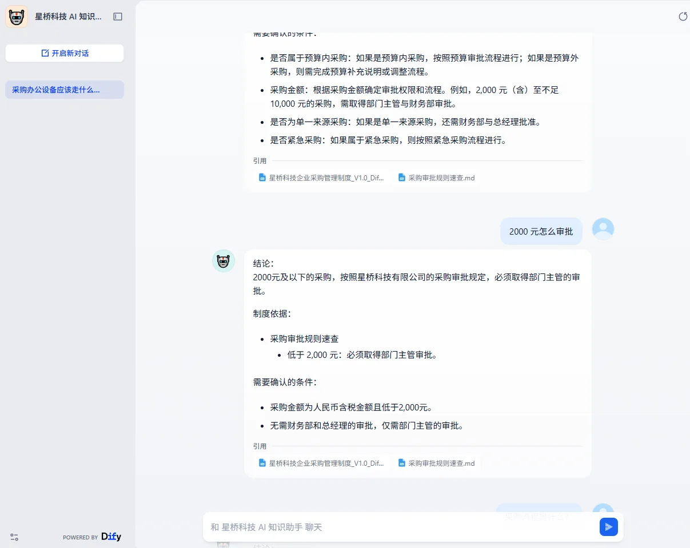
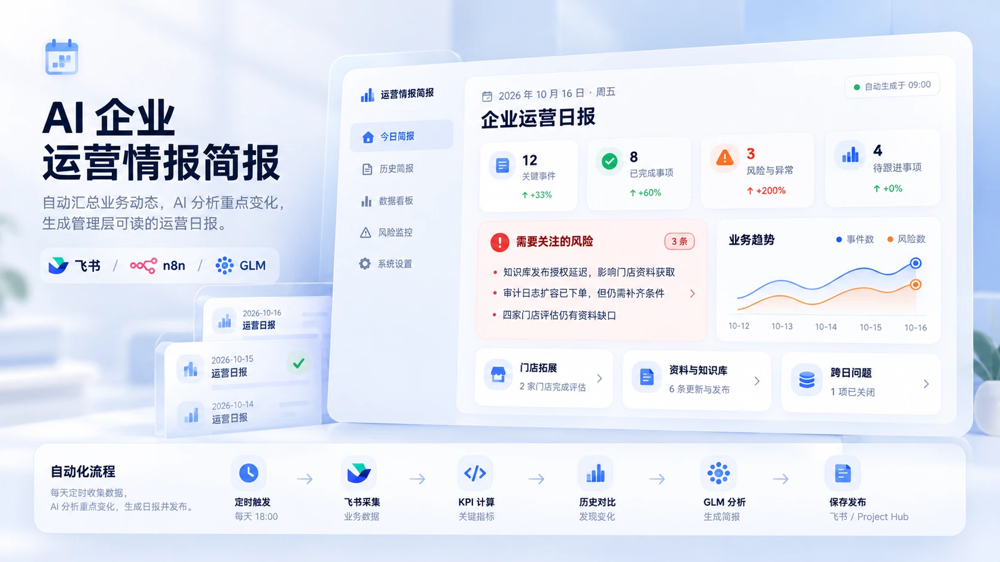

01 / Enterprise knowledge
FlowOps AI
企业自动化闭环
飞书Dify智谱 GLM
探索企业内部流程自动化与 AI 应用落地：从知识检索和员工申请，到主管审批、采购建单及结果回写，呈现端到端工作流闭环。
- 检索企业制度，回答保留来源线索。
- 支持采购问题查询与办理指引。
- 回答附制度来源，提供采购问题指引。
01 — Personal Portfolio
AI 自动化实践者 · 独立开发者
AI Automation Practitioner & Indie Developer
专注企业内部流程自动化、AI 应用落地、AI 辅助开发与独立产品交付。从需求分析、产品与工作流设计，到系统集成、测试和线上部署，持续把真实问题转化为可运行、可验证的产品。结合 AI 工具推进开发，以产品迭代、系统集成和线上交付完成项目落地。
02 — Featured Work
把企业知识、审批流程与日常运营信息放进清晰可追溯的工作链路。

01 / Enterprise knowledge
探索企业内部流程自动化与 AI 应用落地：从知识检索和员工申请，到主管审批、采购建单及结果回写，呈现端到端工作流闭环。
02 / Approval automation
以企业采购流程为例，呈现知识问答、员工申请、主管审批、采购建单与 AI 分析组成的端到端自动化流程。

03 / Daily intelligence
将已保存的运营快照整理为头条、关键变化、管理风险与优先行动，并保留历史比较和数据依据。
03 — Selected Products
04 — How I Build
识别业务问题与目标
设计产品及自动化流程
结合 AI 工具、API 与人工判断完成开发
测试功能、异常分支和业务结果
云端部署并持续优化
Dify / GLM / Knowledge Retrieval
n8n / Feishu / API Integration
Codex / Web Applications / GitHub
Testing / Deployment / Iteration
05 — About & Contact
我关注 AI 应用、企业自动化与产品落地。
徐嘉聪 Daniel Xu，AI 自动化实践者与独立开发者。围绕企业内部流程自动化与 AI 应用落地，参与需求分析、产品设计、工作流设计、AI 辅助开发、系统集成、测试与线上部署。公开作品包括 FlowOps AI、Daniel Workspace、AI Investment Dashboard、Offline Board Games 和 Pomodoro Focus。
通过持续测试与迭代，让想法成为可以体验和验证的产品。